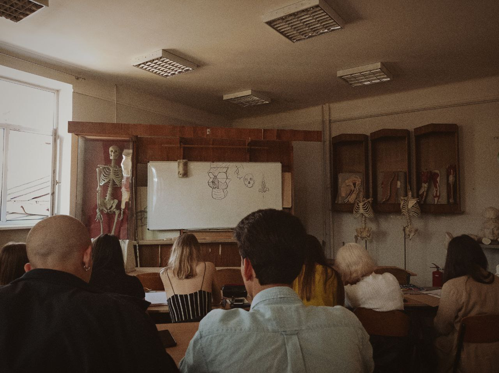
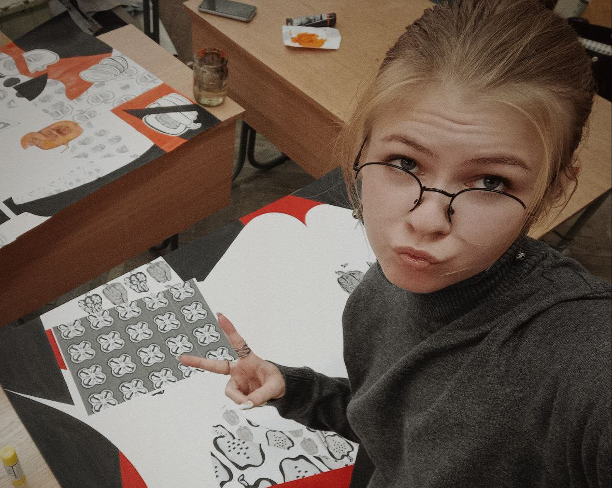
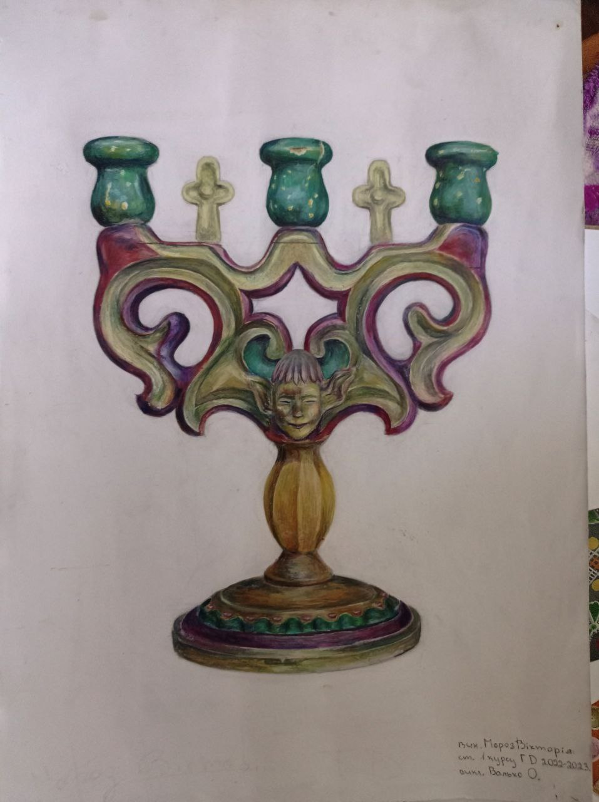
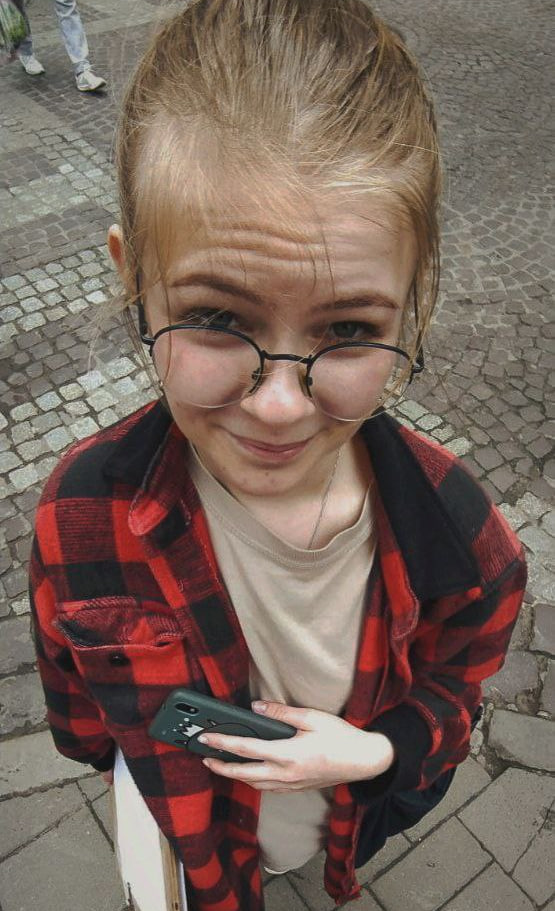
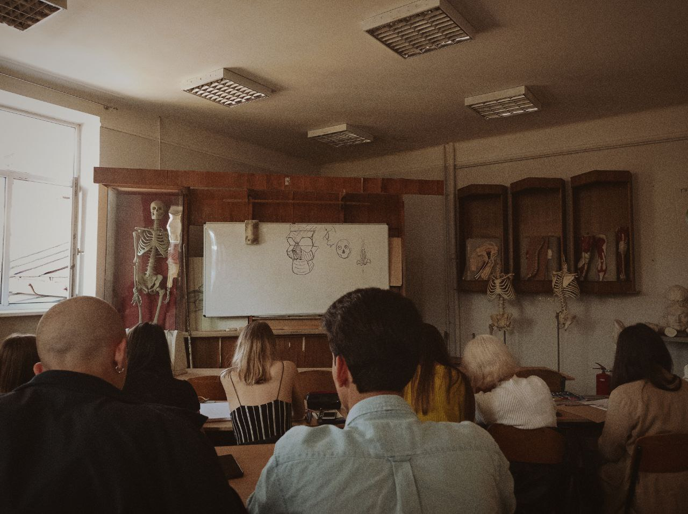
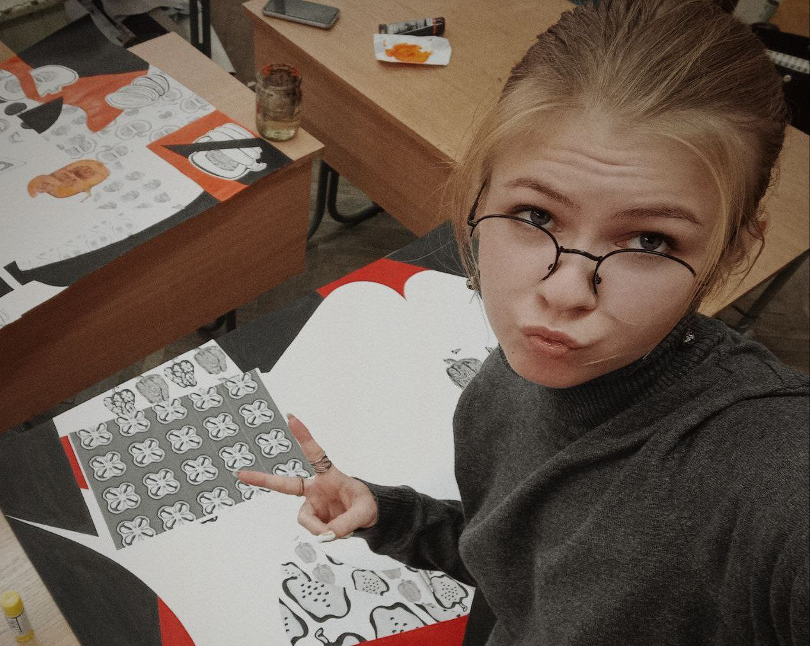
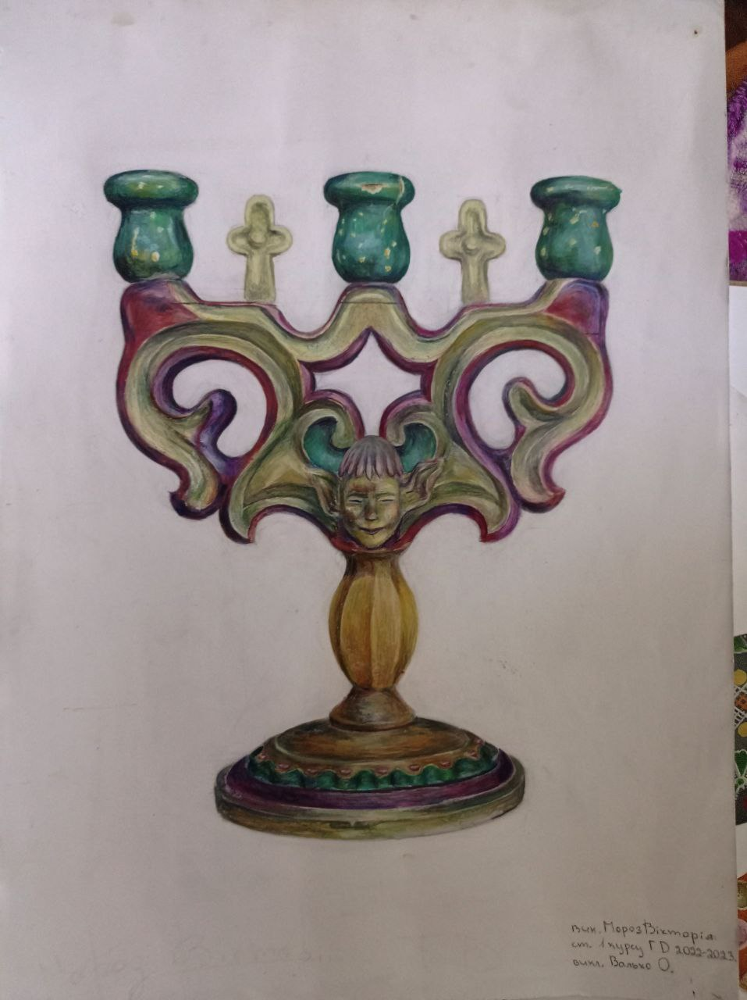
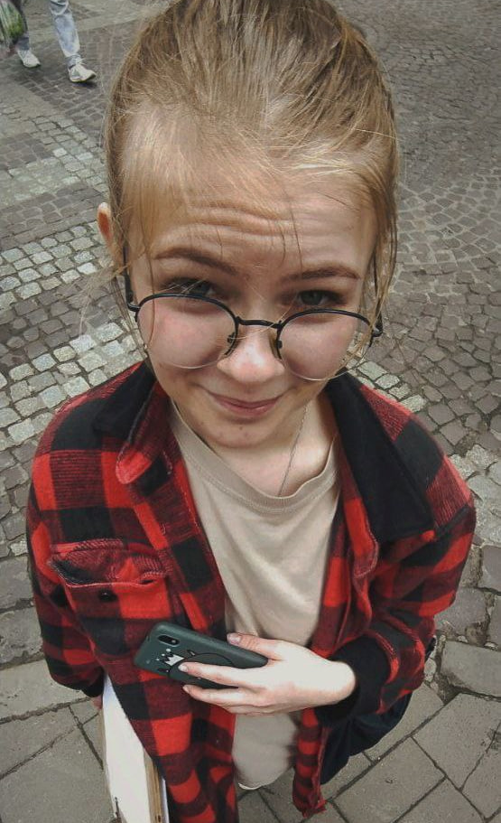

Про мене:
Мені 19 років, я навчаюсь у ЛФКДУМ.ім.І.Труша. за спеціальністю Графічний Дизайнер та закінчую 4 курс. Сама я походжу з невеликого містечка Жовква, що у Львівській області. У мене є дві молодші сестри, пес Кора, дві найкращі подруги та любимий хлопець Юлік💙


 






